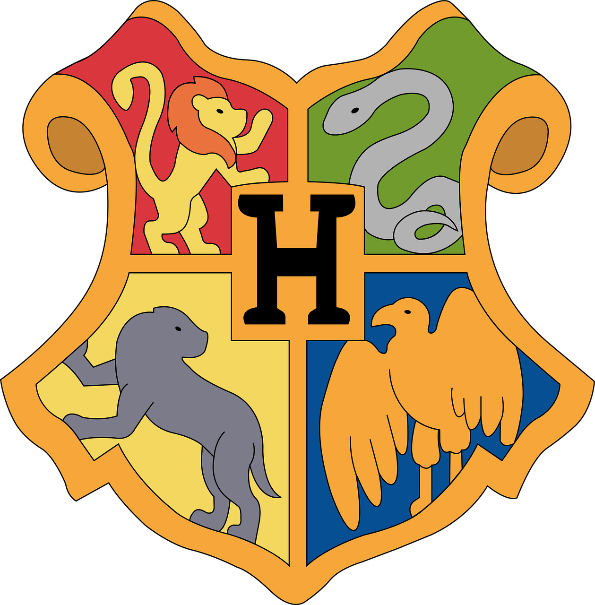

Prepare sua varinha e vista sua capa! Aqui você embarca numa jornada mágica onde poderá descobrir a qual Casa de Hogwarts pertence. Explore o quiz, conheça o universo de Harry Potter e descubra o bruxo ou bruxa dentro de você!
A série de livros Harry Potter, escrita por J.K. Rowling, foi lançada entre 1997 e 2007 e é composta por sete volumes. O primeiro livro, Harry Potter e a Pedra Filosofal, foi publicado em 1997 e apresentou ao mundo o jovem bruxo. Em seguida vieram A Câmara Secreta (1998), O Prisioneiro de Azkaban (1999), O Cálice de Fogo (2000), A Ordem da Fênix (2003), O Enigma do Príncipe (2005) e, por fim, As Relíquias da Morte (2007), que encerra a saga. A série se tornou um fenômeno mundial e marcou uma geração de leitores.

O "trio de ouro" é formado por Harry Potter, Hermione Granger e Ron Weasley, os melhores amigos da série. Eles se conhecem em Hogwarts e enfrentam juntos diversos perigos, incluindo o vilão Voldemort. Harry é corajoso, Hermione é muito inteligente, e Ron é leal e divertido. Juntos, representam a força da amizade e do trabalho em equipe.

Em Harry Potter, os alunos da escola de magia de Hogwarts são divididos em quatro grupos chamados casas. Cada casa representa um conjunto de qualidades e tem sua própria história e símbolos. Ao entrar em Hogwarts, um chapéu mágico escolhe em qual casa o aluno deve ficar, com base na sua personalidade. Grifinória é para os corajosos e ousados. Sonserina reúne os ambiciosos e astutos. Corvinal valoriza os inteligentes e criativos. Lufa-Lufa acolhe os leais, gentis e trabalhadores.

O "trio de ouro" é formado por Harry Potter, Hermione Granger e Ron Weasley, os melhores amigos da série. Eles se conhecem em Hogwarts e enfrentam juntos diversos perigos, incluindo o vilão Voldemort. Harry é corajoso, Hermione é muito inteligente, e Ron é leal e divertido. Juntos, representam a força da amizade e do trabalho em equipe.
No mundo de Harry Potter, a varinha é o principal instrumento de um bruxo para canalizar sua magia. Cada varinha é única e feita com um tipo específico de madeira, um núcleo mágico (como pena de fênix, pelo de unicórnio ou fibra de coração de dragão) e um tamanho diferente. Segundo a tradição, “a varinha escolhe o bruxo”, o que significa que a conexão entre o bruxo e sua varinha é muito especial. Uma varinha bem combinada torna os feitiços mais poderosos e estáveis.
O quadribol é o esporte mais popular do mundo bruxo em Harry Potter. É jogado no ar com vassouras por dois times de sete jogadores. Cada time tenta marcar pontos com uma bola chamada goles, enquanto evita os balaços, que são bolas encantadas que atacam os jogadores. O jogo só termina quando o apanhador captura o pomo de ouro, uma pequena bola dourada que vale 150 pontos. É um jogo rápido, emocionante e muito valorizado em Hogwarts.
Mais do que uma história, Harry Potter é um lugar onde o coração encontra abrigo. Cada canto de Hogwarts guarda memórias de amizade, coragem e descobertas que marcaram uma geração. Ao assistir, revivemos a sensação de que a magia está viva, não só nos feitiços, mas nos laços que construímos, nos sonhos que despertamos. Este vídeo é um convite para lembrar: Hogwarts sempre estará lá para nos acolher, quando precisarmos voltar.
QUIZ
Descura sua casa em Hogwarts com esse Quiz
COMEÇAR QUIZ A qual casa você pertence?
Olá, me chamo Caroline Soares, sou formada em Contabilidade e atualmente estou cursando Análise e Desenvolvimento de Sistemas pela SPTech (São Paulo Tech School). Gosto muito de ouvir música, jogar videogame e acompanhar tudo sobre Harry Potter em meu tempo livre.
Por que um projeto sobre Harry Potter?
Porque Harry Potter fez parte da minha infância e me ensinou muitas coisas importantes, como amizade, coragem e o valor de fazer o que é certo, mesmo quando é difícil. Esse mundo mágico sempre me inspirou, despertou o meu amor pela leitura e pela imaginação, e criar esse projeto é uma forma de compartilhar essa magia com outras pessoas que também cresceram com essa história ou que estão conhecendo agora.